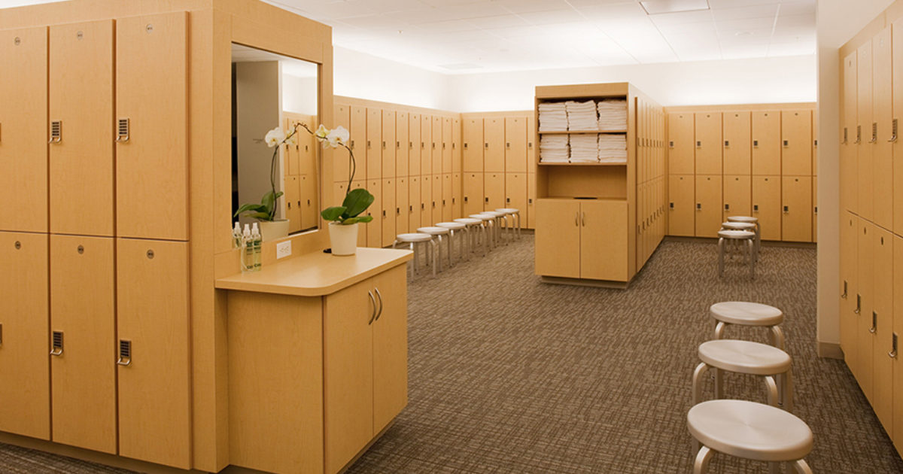
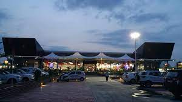

Shanku's Water Park
Some of the Main Services that we provide at our Water Park
LOCKER ROOM
In our Shanku's Water Park we have Big Locker Room where we provide personal locker so that everyone can put in their Important belongings Safely. The presence of a locker room enhances convenience by eliminating the need for visitors to carry their belongings throughout the park. This freedom of movement enables individuals and families to navigate the park's various attractions comfortably. Also Locker rooms provide a practical solution for changing attire. Equipped with changing stalls, benches, and washrooms, these facilities offer visitors a dedicated space to transition from their regular clothing into swimwear. This ensures a smoother and more comfortable experience for all guests.
Health Care
In Shanku's Water Park we Provide health care to our people , A seperate area is built for this where 24*7 one Doctor is always present , In case some injury we take our visitors to them , also we have 2 ambulance Present all the Time , if some one come up Some big injury we directly took them to hospital. Beyond emergencies, healthcare facilities contribute to overall visitor well-being. Water parks often expose visitors to various elements such as sun, water, and physical activity. Having healthcare professionals allows for the treatment of minor issues like dehydration, sunburn, or minor cuts, ensuring that visitors' health is looked after throughout their stay.
Resturant and Food Court
To provide food service In Shanku's Water Park we have total 3 resturant and 1 pool cafe , also beside our Shanku's Water Park we also have Shanku's Food Court where we more than 15 Franchises of food server like Subway , Hocco , Chocolate Room and Many more . Also a restaurant offers diverse culinary choices, catering to a wide array of tastes and dietary preferences. This variety ensures that families, friends, and individuals can find a menu item that resonates with their preferences, enhancing their satisfaction and enjoyment. Furthermore, a restaurant provides a space for visitors to socialize, connect, and create lasting memories. Sharing a meal in a vibrant and communal atmosphere enhances the overall sense of enjoyment and camaraderie among park-goers.
